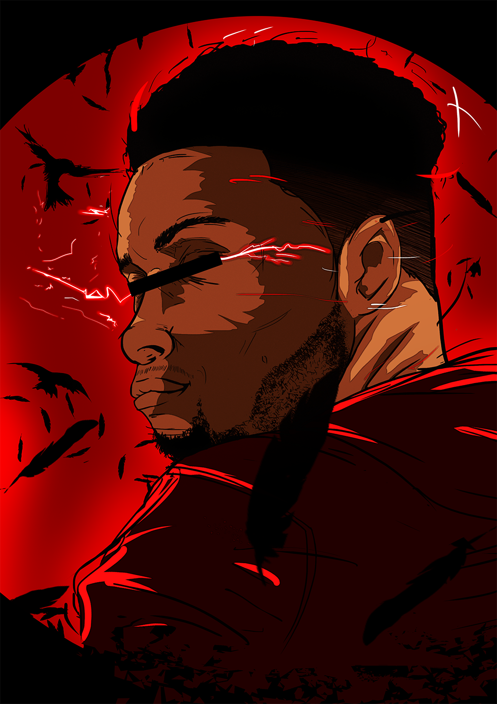
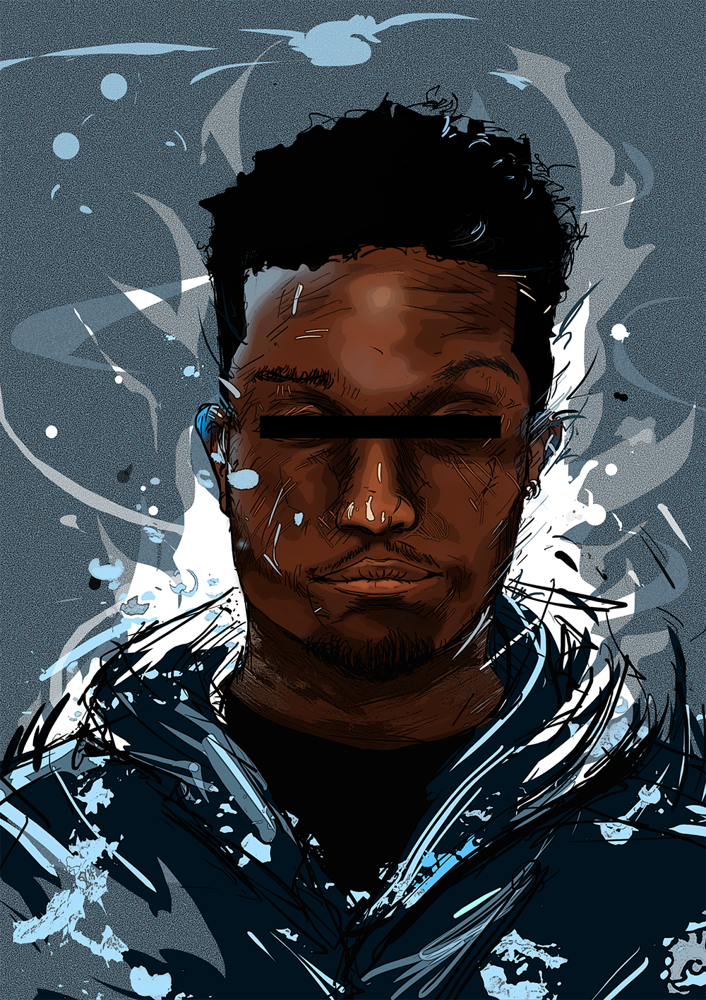
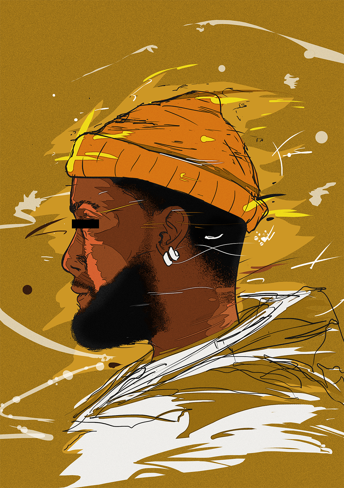

9901's vision of success : what 9901 is trying to do above all is to blend several universes into one. Such as urban, pop and Asian culture in order to get its own graphic identity and reach more people through the medias, like photography, drawing, video and others ... We use a wide type of support to solve your issues.
Parys

JUNIOR ARTISTIC DIRECTOR.
24 YO
Always at the search of new concept for working on.
I try to use my versatility as a force and be capable of manage all situations.
Graduated in graphic design to learn the codes of communication and understand the world around us.
There is so much things that you cannot understand if you don't open your mind and pass on the other side.
Beyond that, i'm especially interested by the world of animation and video games, certainly cuz' i'm born with a joystick into my hands, always watching and reading manga books, trying to transform myself as a super sayajin or try to morph into a power rangers. *Laught*
In Short. I'm Me and Welcome into my conscience
Owalida

ARTIST PLURI-DISCIPLINARY.
25 YO
I illustrate myself in illustration, story board, 3d modeling and 3D animation. I particularly appreciate the change, confronted me with what I have never been confronted with, the changing of defies, at times it is hard but that is what is fun ... no ?! specialization ? For now I prefer to say that I have none and it suits me well
Hao ikki

JUNIOR ARTISTIC DIRECTOR.
24 YO
I am passionate about art in the broad sense : Cinema, Painting, Music, Dance, Graphics all these means of expressions are for me a way of living fully my life. To come to the design I am a typographer, you can usually see it at the center of my work. It allows me to express myself in my creation in a very personal way and to convey ideas through a unique gesture. I also practice photography, for me it is means of expression and way of seeing the world, strange but at the same time very powerful.
I have a special affinity for video, I can spend days to film to work my viewpoint, my angles, the lights, the emotion caused in a composition. Putting a subject into a particular theme is an important thing. Hence this defined my profile as Junior Artistic Director, I appreciate varying my subjects, my supports and my requests, being able to perform several tasks is important in my graphic design.